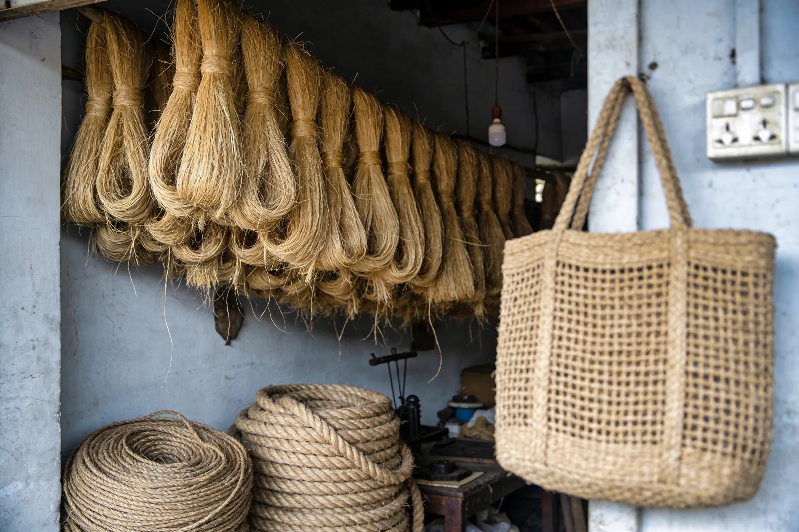
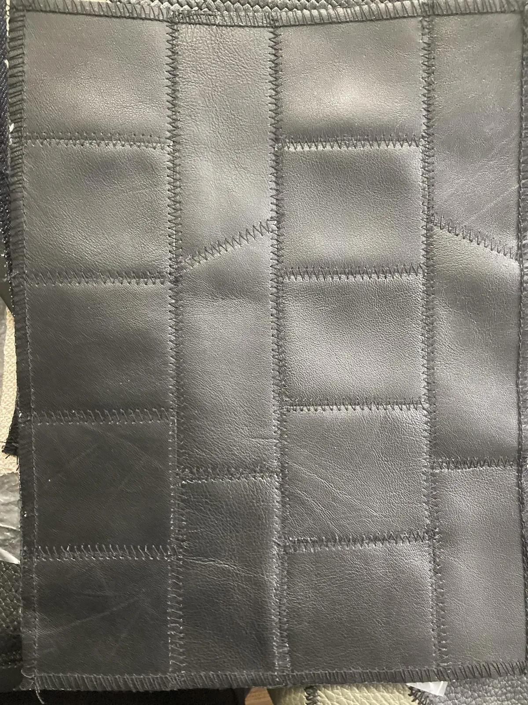

OEM desk · Bangladesh
From the hands of Bangladesh to your label.
One desk for two ways of making: partner factories for outerwear and apparel at scale, and women artisans for nakshi kantha, jamdani, jute and leather in small runs.

Handcraft Line

Partner Factory Line
Two lines, one desk
Made in Bangladesh, by hand and by industry.

Line 01
Partner Factory Line
Outerwear and padded jackets, woven, soft woven and knit — made by a partner factory network for production runs.
- Minimum
- Ask us
- Lead time
- Ask us

Line 02
Handcraft Line
Nakshi kantha, jamdani, jute, leather and home textiles — stitched and woven by hand, in small runs, each piece slightly different.
- Minimum
- Ask us
- Lead time
- Ask us
How it works
Five steps, starting with a sample.
- 01
Inquiry
Tell us what you want to make, which line, and roughly how many. We reply with questions, options and the sample fee.
Free - 02
Sample
The sample is made in the line that fits. You pay the sample fee in advance, by card.
Sample fee, paid in advance - 03
Quote
After you approve the sample, you receive a quote with unit prices, quantities, lead time and payment terms.
Terms set in the quote - 04
Production
Production runs with checks during the run and a final inspection against the approved sample.
As quoted - 05
Shipping
Revival Global Ltd exports from Bangladesh. Courier by DHL or FedEx; sea freight for larger orders. DDP on request.
Shipping as quoted
Payment points: the sample fee by card before the sample · production and shipping as set in your quote.
What we can make
From padded jackets to hand-stitched quilts.
Partner Factory Line
Partner Factory LineHandcraft Line
Handcraft LineHandcraft materials
Five materials to build around.
Nakshi kantha
Running-stitch embroidery, stitched by hand.
Learn more→
Jamdani
Fine muslin, with motifs woven in by hand.
Learn more→
Jute
The golden fibre, spun, woven and braided.
Learn more→
Leather
Leather and factory offcuts, cut and stitched.
Learn more→
Recycled saree
Worn saris, cut and pieced into new cloth.
Learn more→
Who makes it
Handcraft that is also work.
The Handcraft Line grew out of Revival's work with women artisans in Bangladesh: turning traditional stitching and weaving into paid work, one order at a time.
Every handcraft order is made by hand, so pieces vary slightly. We show you that range at the sample stage, and agree what is acceptable before production.
About RevivalCase studies
First projects, in preparation.
We will publish case studies here with the permission of the brands involved: what was made, how many, how long it took.
Start small
Start with a sample.
Send us your idea. We tell you which line fits, what the sample costs and how long it takes — before you commit to a production order.